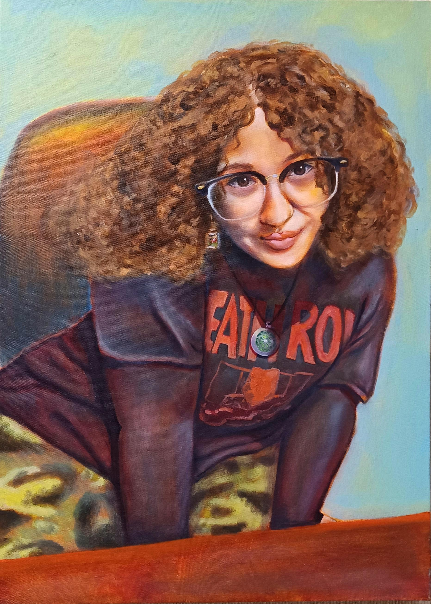
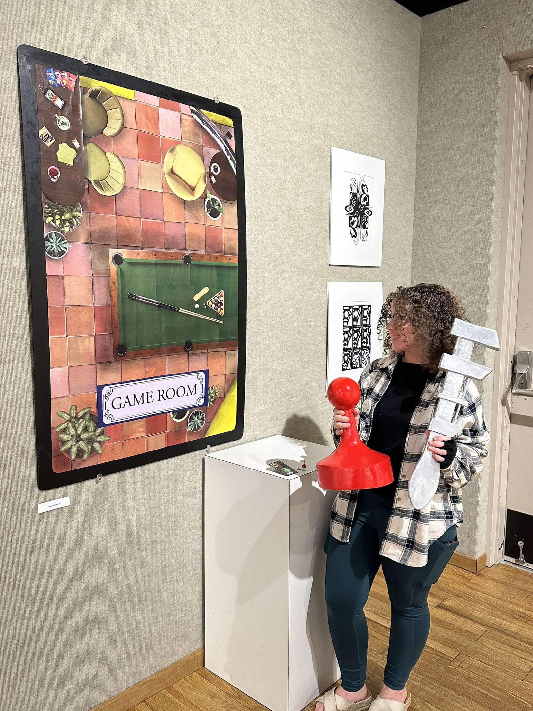
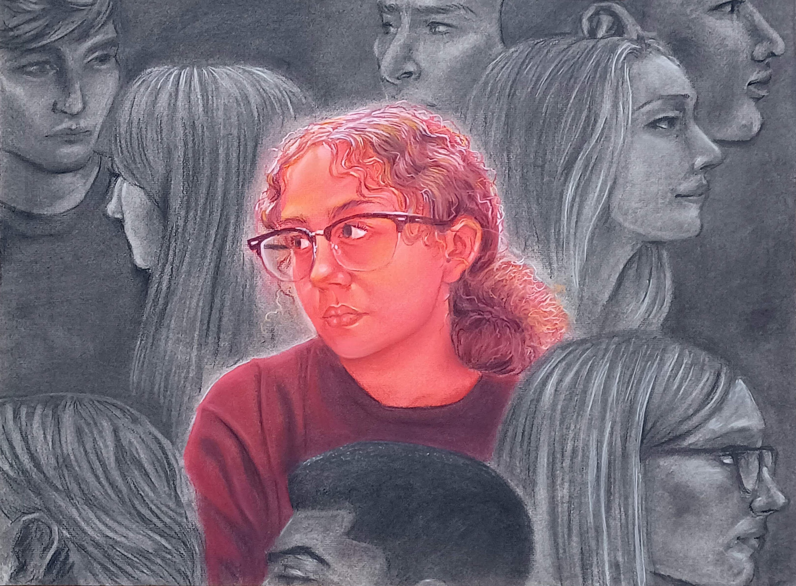
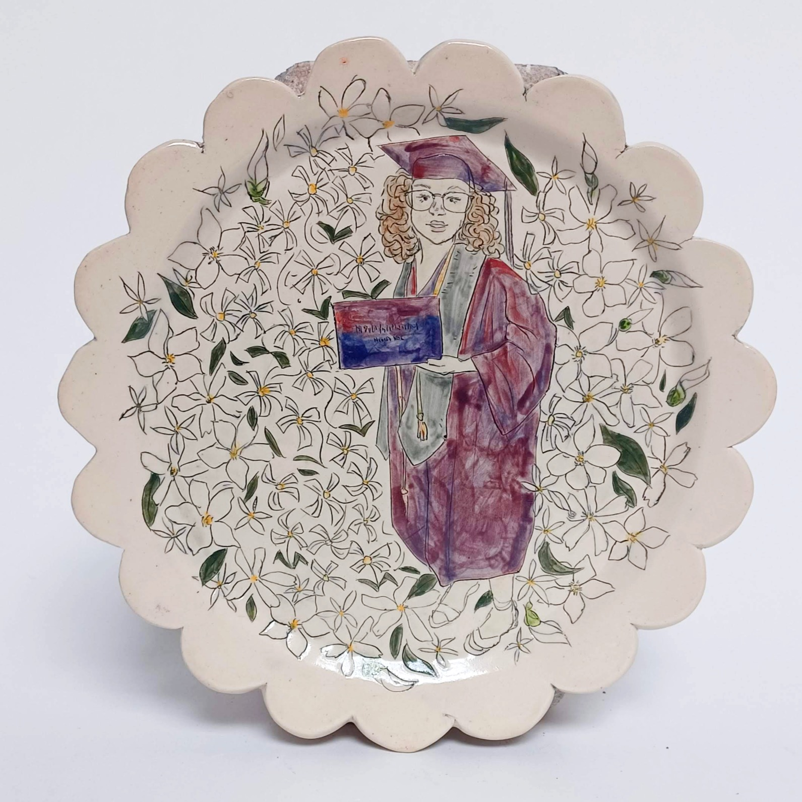

A / PORTRAIT

A living archive of color, presence, and form
Onnika Vanover works across portraits, painted spaces, objects, commissions, and shared creative experiences.
Enter the archive↓
Faces carry histories. Rooms tilt into feeling. Ordinary objects become charged evidence.
The through-line is attention: warm, unguarded, exacting—and alive to what most people miss.
Paintings, portraits, places, objects, and installations from Onnika’s working archive.




Student work is held as a separate future gallery until Onnika selects the projects and credits.
Different ideas need different forms. Choose a doorway into the work.
Preview selected work by subject. Final titles, editions, sizes, prices, availability, and fulfillment stay with Onnika.

PORTRAIT / PSYCHE STILL LIFE / COLOR
STILL LIFE / COLOR
COLOR STUDY / PULSE